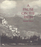

Visual Studies, edited by Douglas Harper,
will consist of a broad range of books that regard photography,
film, and other visual media as vehicles for exploring social and
cultural themes. We are developing a series of illustrated books
that draw on photographs as primary documents and that include a
substantial analytic text; however, we will also consider unillustrated
manuscripts on visual subjects. Douglas Harper is a photographer
and sociologist who teaches at Potsdam College of the State University
of New York. |

|
You
Are My Darling Zita
Busch, Glenn 304 pp • Fall 1991
cloth 978-0-87722-791-5
Excerpt available |

|
The
Male Nude in Contemporary Photography
Davis, Melody D. 208 pp • 7x10 •
Fall 1991
paper 978-1-56639-198-6
cloth 978-0-87722-839-4 |

|
Dust
to Dust
A Doctor's View of Famine in Africa
Heiden, David 224 pp • 7.5x10 •
Spring 1992
cloth 978-0-87722-912-4 |

|
Polka
Happiness
Keil, Charles, Angeliki V. Keil and Dick Blau 288
pp • 8x10 • Fall 1992
paper 978-1-56639-462-8
cloth 978-0-87722-819-6 |

|
Images
of Appalachian Coalfields
Levy, Builder, introduction by Helen Matthews Lewis, foreword by Cornell
Capa 144 pp • 8x10 • Spring 1989
cloth 978-0-87722-588-1 |

|
Journey
to a Far Place
Autobiographical Reflections
Quinney, Richard 152 pp • 8x10 •
Fall 1990
cloth 978-0-87722-725-0
Excerpt available |

|
A
Pause on the Path
Silvers, Ronald 208 pp • Fall 1988
cloth 978-0-87722-559-1 |

|
No
Easy Walk
Newark, 1980-1993
Stummer, Helen M. 160 pp • 7x10 •
Fall 1994
paper 978-1-56639-243-3
cloth 978-1-56639-242-6 |